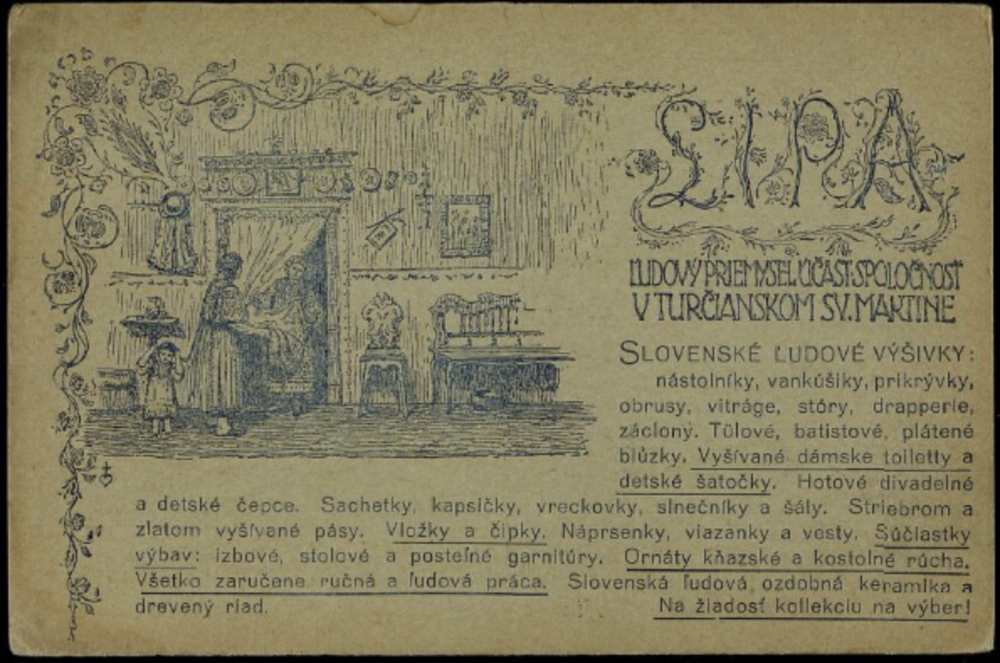
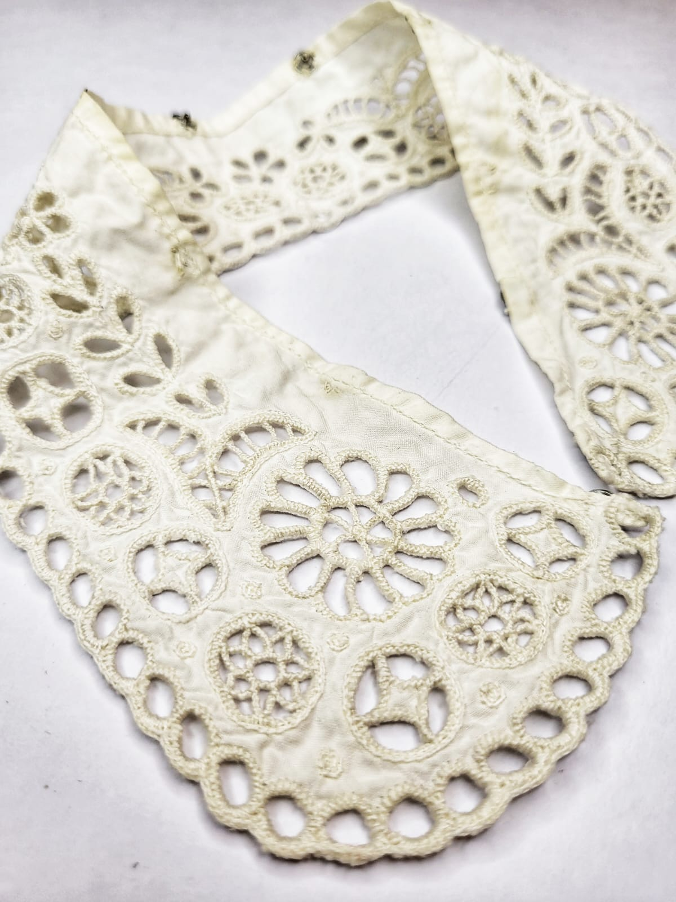
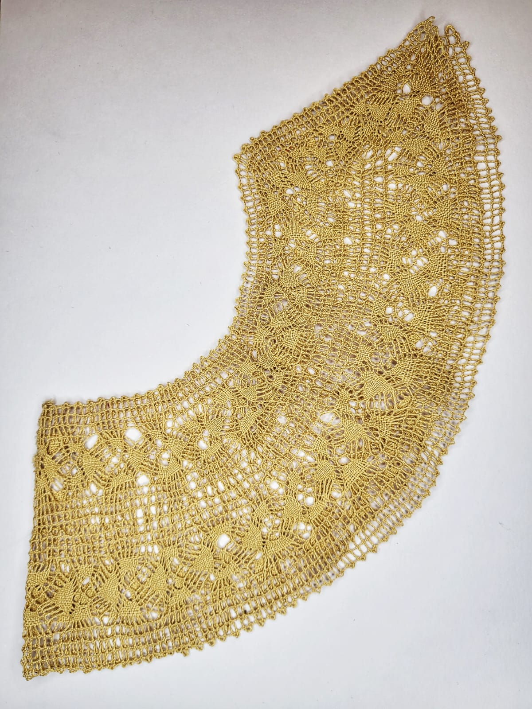

Príbeh · Lipa
Účastinárska spoločnosť pre ľudový priemysel · Martin · 1910 – 1953

Zdroj: DIKDA – Digitálna knižnica SNK
Lipa, založená v roku 1910 v Martine, nebola len obchodom s výšivkami. Bol to jeden z najprogresívnejších slovenských podnikov svojej doby, ktorý dokázal prepojiť archaickú krásu dedinských izieb s nárokmi európskych salónov.
Jej cieľom bolo nielen chrániť slovenské vzory, ale vytvoriť fungujúci ekonomický systém pre slovenské ženy.
Lipa fungovala na princípe, ktorý by sme dnes nazvali „outsourcing" s prísnou kontrolou kvality. Celý proces mal presne stanovené kroky:
Správkyne spoločnosti — medzi ktorými pôsobila aj Anna Šenšelová — cestovali po rázovitých regiónoch Slovenska. Z týchto podkladov vytvárali precízne vzorkovníky, ktoré určovali, čo a ako sa bude vyšívať.
Lipa si vybudovala širokú sieť spolupracovníčok v obciach ako Čataj, Slovenský Grob, Detva či okolie Trenčína a Piešťan. Ženy vyšívali podľa presných zadaní, čím sa zabezpečila jednotná estetická línia podniku.
Lipa vyšívačkám dodávala vlastné plátna a nite, čím garantovala, že finálny produkt bude trvácny a luxusný.
Každý hotový kus prešiel prísnou kontrolou. Táto nekompromisnosť vybudovala Lipe meno značky, na ktorú sa dalo spoľahnúť aj pri objednávkach z Paríža či Viedne.
Lipa priniesla do slovenských dedín revolučnú zmenu – vlastný finančný príjem pre ženy. Za vyšívanie sa platilo férovo a v hotovosti. Pre mnohé ženy to bola prvá skúsenosť s ekonomickou slobodou.

Ukážka výšivky z produkcie Lipy

Paličkovaný ozdobný golier z dielne Lipy, nájdený v pozostalostiach Anny Šenšelovej
Úspech Lipy spočíval v schopnosti inovovať. Motívy z rukávcov, čepcov či košieľ citlivo aplikovali na:
Lipa úspešne konkurovala priemyselnej výrobe. Jej výrobky pravidelne získavali ocenenia na svetových výstavách — strieborné medaily vo Viedni aj v Košiciach a pred vypuknutím druhej svetovej vojny mala Lipa dostať zlatú medailu priamo z Paríža.
Odkaz Lipy
Lipa zomkla slovenské ženy a ich talent premenila na svetovo uznávané umenie, ktoré obdivoval celý svet. Tento odkaz ženskej súdržnosti a hrdosti potrebujeme aj dnes, aby sme s rovnakou odvahou chránili naše vzácne dedičstvo.